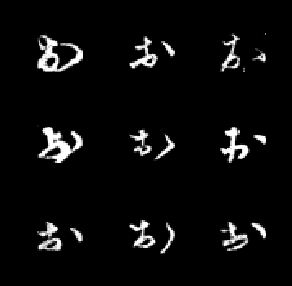
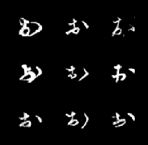

DeepMetamorphose
Your Name HereFall 2019 CS 6476 Computer Vision: Class Project
Georgia Tech
Problem Statement:
Inspiration for this project comes from the art work of Matthieu Robert-Ortis, the style of which the author has named Métamorphose.Anamorphosis is a distorted projection of an object that requires the viewer to use special devices, have a certain vantage point, or both, in order to properly view the object. Métamorphose builds upon this by combining two anamorphic objects. Generally speaking, from one vantage point the viewer sees one object, and from a different vantage point, he sees a second object. Some examples of this are the cover of Gödel, Escher, Bach: An Eternal Golden Braid by Douglas Hofstadter or the logo of the popular deep learning framework TensorFlow.


The goal of this project is to develop a model that takes two images as input and generates a 3D object which, if viewed from two specific vantage points, will represent the two original images.
Approach
Since there does not exist a proper dataset for training such a model, a Reinforcement Learning (RL) algorithm will be used. In this case, a Convolutional Neural Network (CNN) will be trained to determine the policy of the RL agent. The agent will take as input the two original images along with a projection of each image from the previous iteration of training, as shown in the figure below.Each image will pass through a CNN, which will share weights with the other three CNNs. Features from each of the four CNNs will be concatenated and fed into a policy network to produce an action, which could either be a blob/sphere of a certain size and color at a certain location or a line of a certain size and color.
Experiments and results
The project will be broken into two parts: learning to draw in 2D and then extension to 3D.Tools: Pytorch, Matplotlib (for 2d/3d rendering)
List of experiments:
- Overfitting to a single data sample - drawing in 2D
- Training on MNIST dataset - drawing in 2D
- Overfitting to a single data sample - drawing in 3D
- Training on MNIST dataset - drawing in 3D
- Training on larger, more difficult dataset (e.g KMNIST) - drawing in 3D (stretch goal)
 
